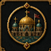
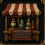
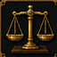
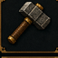

Sunucu Kabul Testleri
v1.14.2 oyuncu rehberleri tamamlandı; çok oyunculu denge ve gerçek oyun testi yapılacak.
MINECRAFT BEDROCK • YAŞAYAN KRALLIK
Gölgelerin içinden kendi krallığını kur
Ekonomi, meslek, ırk, kasaba ve yaşayan dünya yönetimini tek bir bağlı deneyimde birleştiren kapsamlı Bedrock projesi.

Dünya seviyesi, özel XP, otomatik denge, dünya olayları, kişisel hedefler, başarımlar ve canlı sıralamalar.
DETAY SAYFASINI AÇ →
Bakiye, para transferi, banka hesapları, borç düzeni, işlem geçmişi ve kasaba hazinesi.
DETAY SAYFASINI AÇ →Merkezî market, oyuncu pazarı, fiyat sistemi, satış noktaları ve açık artırma işlemleri.
DETAY SAYFASINI AÇ →
Dinamik fiyatlar, borsa görevlisi, alış-satış işlemleri ve ekonomi etkileri.
DETAY SAYFASINI AÇ →
Kalıcı ana meslek, üç alt meslek ve gerçek faaliyetlerden kazanılan meslek XP’si.
DETAY SAYFASINI AÇ →2,5 saniyelik animasyon sonrası menü, meslek ve itibara özel sohbetler, hafıza, NPC–NPC sahneleri, devriye ve dünya olaylarına tepki.
NPC ANSİKLOPEDİSİIP adresi ve canlı oyuncu bilgisi hazır olduğunda burada yayınlanacak.
SUNUCU SAYFASI